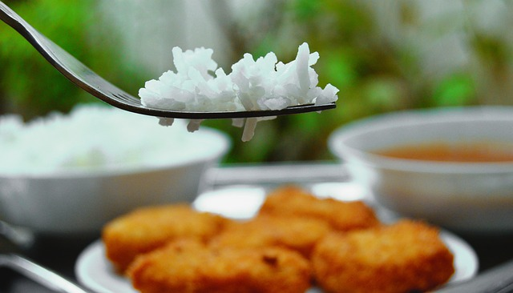

sticky Rice

Description
Liste des ingrédiants
- 3 verre de riz
- 1,5 verre d'eau pour la cuisson
Etape de fabrication :
- Ajouter le riz dans un grand recipiant et rincé abondament le riz.
- Une fois rincer laisser le riZ dans l'eau 5 a 6 heures.
- Egouter le riz.
- Ajouter le riz dans une casserolle puis l'eau.
- Couvrer la casserole, puis porter a ebulision l'eau.
- Couper la flamme, et laisse le couvercle fermer pendant 20 min.